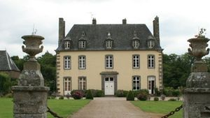
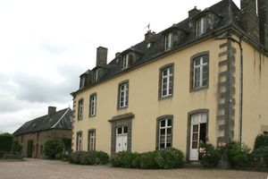
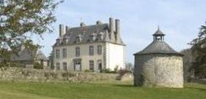
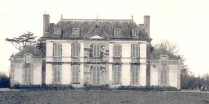
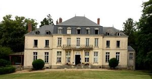
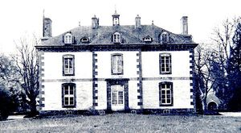

Recensement Jean-Claude Truffet
| Département | 35 — Ille-et-Vilaine |
| Canton | Dol-de-Bretagne |
| Commune | Miniac-Morvan |
| Type d'édifice | Château |
| Période d'origine | XIII-XV-XVII |
| Coordonnées GPS | 48° 30' 53" Nord, 1° 54' 00" Ouest Gouillon GPS : 48° 32' 07" Nord, 1° 54' 25" Ouest |






Quatre châteaux à Miniac-Morvan dont Miniac-Morvan, le Bas Miniac, Bishamon et Gouillon. MINIAC-MORVAN, date de 1749-1758. Il est édifié sur l'emplacement d'une demeure fortifiée du XIIe et du XIIIe siècle, dont il reste encore quelques vestiges (tours qui flanquaient le pont-levis). Au XIIe siècle, il appartient à Guillaume de Miniac. C'est sans doute le nom du premier seigneur, fondateur de ce lieu fortifié. Au XIVe siècle, un Olivier de Miniac est compagnon d'armes de Du Guesclin. Le château comprend un donjon, un pont-levis, des douves, des contrescarpes, des courtines et des tours. La seigneurie, érigée en vicomté, dépend du Comté de Châteauneuf. En 1589, les seigneurs du Chastel, favorables aux huguenots, voient leur château démantelé par les troupes de Mercoeur. Il ne subsiste aujourd'hui de ce château-fort qu'une partie des deux tours et de la courtine. Le château actuel se compose d'un logis, d'une chapelle, d'une cour avec communs, d'un colombier et d'un étang, seigneur de Miniac (XVIIe-XVIIIe siècles). Le château est la propriété successive des familles de Miniac, de Québriac au XIVe siècle, de Mauny, seigneurs de Lesnen, du Châtellier, vicomtes de Pommery au XVe siècle, du Chastel en 1522, de Rieux seigneurs de Châteauneuf vers 1560, de Scépeaux, ducs de Beaupréau, de Gondy ducs de Retz vers 1618, de Boiséon vicomtes de la Bellière en 1620, Gouyon, seigneurs de la Ville-aux-Oiseaux avant 1638, le Clavier en 1652, de France seigneurs des Champs-Bulants en 1772 en 1789, à de Villèle.
BAS-MINIAC, date du XVe, XVIIe et XVIIIe siècle. Le Château de Bas-Miniac fut l'ultime berceau de la famille de Miniac. Le château fut édifié sur les restes d'une motte féodale, batie autour de l'an Mil, alors qu'apparaît la forme la plus ancienne du nom Miniac, Méniac. Le Château de Bas-Miniac, ultime berceau de la famille de Miniac, le château est édifié sur les restes d'une motte féodale, construite autour de l'an mil alors qu'apparaît la forme la plus ancienne du nom Miniac. BISHAMON, le manoir de Bishamon fut la propriété de la Maison de Bohier, puis de Québriac, Seigneurs de la Hirelays, en 1513. GOUILLON La construction du château de Gouillon date du XVe siècle, château, manoir ou métairie noble, les premières mentions datent du XIIIe siècle. Il fut incendié mais reconstruit. Le Château de Gouillon a été la propriété successive des familles du Breil, de Québriac (1513), Gaultier (1658), Uguet, et Laubespin. C'est en 1735 que la malouinière fut construite. L'édifice ainsi modifié faisait 35 m de long sur 15 m de large pour 16 m de hauteur. Cela en faisait une des plus imposantes de la région. Le milieu du XIXe siècle voit les Mouchet de Batteforf (comte et marquis de Laubespin) devenir les maitres de Gouillon.
Miniac ;Famille Olivier de Miniac Bishamon; Famille de Bohier Gouillon ; Famille de Laubespin
"
Quatre châteaux à Miniac-Morvan dont Miniac-Morvan, le Bas Miniac grav 1-2-3, Bishamon et Gouillon grav-4-5. Touche-grav-5 Bas Miniac GPS : 48° 30' 53" Nord, 1° 54' 00" Ouest Gouillon GPS : 48° 32' 07" Nord, 1° 54' 25" Ouest